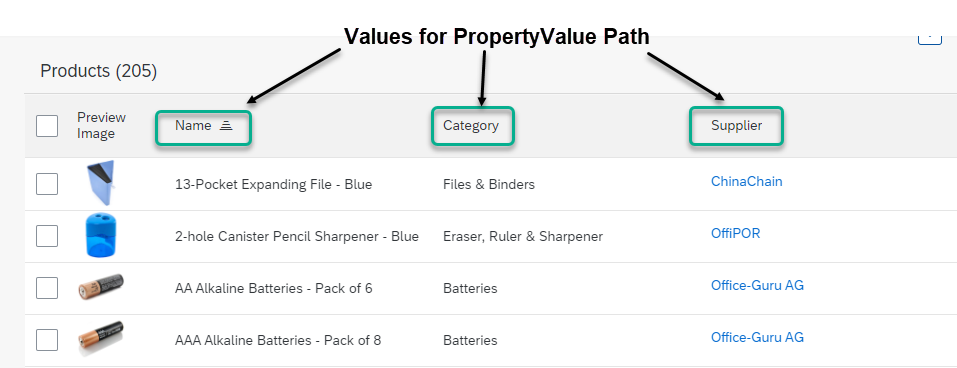

Defining Line Items
Defining Line Items
To define the line items of a table, use com.sap.vocabularies.UI.v1.LineItem
as shown in the code samples below. The rendering result is as follows:

Determining Column Names
...
<Annotation Term="UI.LineItem">
<Collection>
<Record Type="UI.DataField">
<PropertyValue Property="Value" Path="Product"/>
<Annotation Term="UI.Importance" EnumMember="UI.ImportanceType/High"/>
</Record>
<Record Type="UI.DataField">
<PropertyValue Property="Value" Path="ProductCategory"/>
<Annotation Term="UI.Importance" EnumMember="UI.ImportanceType/High"/>
</Record>
<Record Type="UI.DataField">
<PropertyValue Property="Value" Path="Supplier"/>
<Annotation Term="UI.Importance" EnumMember="UI.ImportanceType/High"/>
</Record>
</Collection>
</Annotation>@UI.lineItem: [
{
importance: #HIGH,
value: 'PRODUCT',
type: #STANDARD,
position: 1
}
]
PRODUCT;
@UI.lineItem: [
{
importance: #HIGH,
value: 'PRODUCTCATEGORY',
type: #STANDARD,
position: 2
}
]
PRODUCTCATEGORY;
@UI.lineItem: [
{
importance: #HIGH,
value: 'SUPPLIER',
type: #STANDARD,
position: 3
}
]
SUPPLIER;UI.LineItem : [
{
$Type : 'UI.DataField',
Value : Product,
![@UI.Importance] : #High
},
{
$Type : 'UI.DataField',
Value : ProductCategory,
![@UI.Importance] : #High
},
{
$Type : 'UI.DataField',
Value : Supplier,
![@UI.Importance] : #High
}
]
This video shows the step-by-step procedure for adding line items to a list report table:
Disclaimer:
The below video
 is not part of the SAP product documentation. Please read the
legal disclaimer
for video links before viewing this video.
is not part of the SAP product documentation. Please read the
legal disclaimer
for video links before viewing this video.
More Information
For information about adding actions for line items in the list report view, see Adding Actions to Tables.
For information about responsiveness options in tables, see Responsiveness Options: Example.